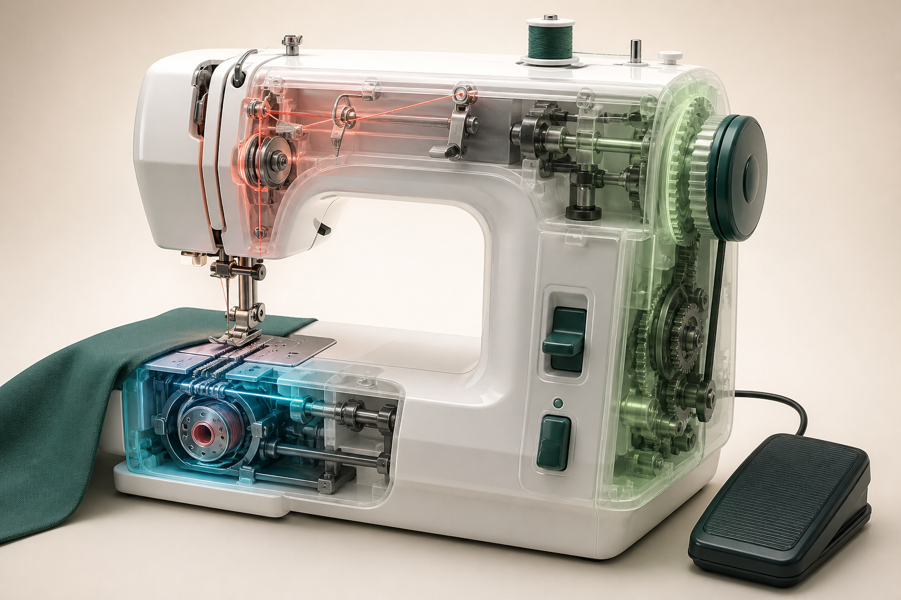
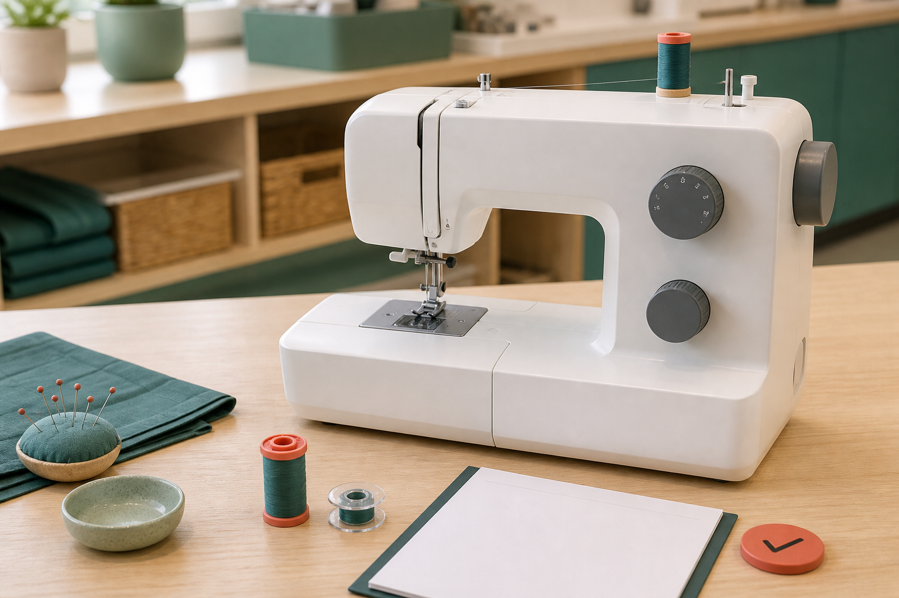
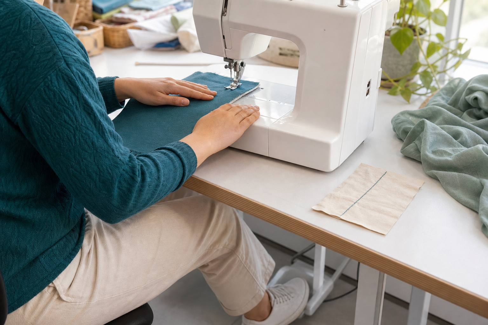

Section 1
Machine Parts and Their Functions
Learning purpose: Build a functional map of common machine parts so students can communicate clearly and understand how fabric, thread and controls interact.
A sewing machine is a system: controls, thread-handling parts and fabric-handling parts work together to form consistent stitches. Models vary, so students learn functions first and then match those functions to the labelled machine demonstrated in class.
The needle carries the upper thread through the fabric. Below the fabric, the bobbin supplies the lower thread. Internal mechanisms connect the two threads to form a stitch. A correct needle, securely fitted for the machine and task, is essential; any fitting or replacement follows teacher direction.
The presser foot holds fabric against the feed dogs. Feed dogs rise and move in a repeated pattern to advance the fabric while the needle forms stitches. This is why the operator guides the fabric and allows the machine to feed it rather than pulling it from behind.
Common thread-path parts include a spool holder, guides, a tension system and a take-up mechanism. Their arrangement differs by model, but each helps deliver thread in a controlled way. Missing one part of the demonstrated path can lead to loose, uneven or broken thread.
Common controls may include a power switch, speed control or foot control, handwheel, stitch selector and reverse function. Their positions and operation vary. Before use, identify the start–stop controls, moving needle zone and the safe way to stop and seek help on the actual machine.
Key vocabulary
- needle
- The machine part that carries upper thread through the fabric.
- bobbin
- The small lower-thread supply used in forming machine stitches.
- presser foot
- The part that holds fabric against the feed mechanism while sewing.
- feed dogs
- Toothed parts that help advance fabric through the stitch-forming area.
- tension system
- Parts that regulate thread delivery so stitches can form consistently.
Diagnosing fabric that is not moving as expected
- Stop the machine and remove pressure from the control.
- Observe without reaching into the needle area: is the presser foot positioned as demonstrated and is fabric correctly placed?
- Recall that feed dogs move fabric while the presser foot holds it in contact.
- Report the exact observation to the teacher instead of pulling the fabric or changing unfamiliar controls.
Conclusion: Knowing each part's function supports a specific, safe report and avoids creating a second problem.
Ideas to challenge
- The operator should pull fabric because feed dogs do not move it.
- All sewing-machine models place and operate controls identically.
Two threads form the stitch
The needle carries upper thread; the bobbin supplies lower thread; internal mechanisms connect them through the fabric.
Hold and feed the fabric
The presser foot holds fabric against the feed dogs, which advance it; the operator guides rather than pulls.
Identify actual controls
Spool, guide, tension and control layouts vary, so match functions to the demonstrated machine before operation.

Complete non-video pathway
Function-to-part walkaround
The generic machine cutaway and an unpowered, teacher-approved walkaround teach the same transferable part/function map.
Before
- Read the adjacent explanation and study the generic machine functional zones.
- Keep the machine unpowered and wait for teacher permission.
During
- Read one function card without naming a location.
- Point to the labelled part on the actual machine.
- Explain how it interacts with one neighbouring part.
- Record any model-specific label for later checking.
After
- Complete the same function-to-part map used by video viewers.
- Check any part or label that differs from the generic diagram with your teacher.
Evidence to keep: A function-to-part map and one verified model-specific note.
Check, apply and save evidence0/10 + response
Answer all ten checks. Feedback appears after each choice, so use it to revisit the linked theory before continuing.
Higher-order response
Explain your thinking
Explain how the upper-thread path, needle, bobbin, presser foot and feed dogs cooperate to form stitches and move fabric. Use the explanation to propose a safe response when fabric stops advancing normally.
Build your response
- Describe each named part's function.
- Explain the interaction between upper and lower thread.
- Explain how holding and feeding differ from operator guidance.
- Sequence a stop, observe and report response without inventing a repair.
Success looks like
- Explains the machine as an interacting system.
- Uses functional knowledge to support a safe, model-aware response.
Nothing saved yet.
Resume this packageSection 2
Threading, Bobbins and Setup
Learning purpose: Explain why a machine-specific, power-off setup sequence and complete pre-use check are necessary for reliable stitch formation.
Threading is not a memory race. It is a model-specific pathway that prepares the upper and lower threads to move in a controlled way. Accurate setup with power off prevents many faults before sewing begins.
The upper thread travels from its supply through a demonstrated sequence of guides, tension parts and the needle. Every required point matters because each helps position or regulate the thread. A path that looks nearly right may still skip a guide and produce loops, breaks or uneven stitching.
The bobbin needs to be wound evenly with suitable thread and installed in the demonstrated direction and holder. Direction and placement vary by machine. Forcing a bobbin, guessing its orientation or using an unsuitable one can prevent correct lower-thread delivery.
Setup happens with the machine powered off unless the teacher demonstrates a controlled model-specific step that requires otherwise. Secure loose hair, clothing and jewellery, keep hands dry and make sure the needle, presser foot, thread and bobbin are prepared as instructed before power-up.
A pre-use check is evidence, not delay. Confirm the thread path against the machine's labelled guide, check that loose thread ends and fabric are positioned as demonstrated, identify the stop control, and ask for a check when anything resists, looks damaged or differs from the model demonstration.
Key vocabulary
- thread path
- The ordered route the thread follows through the machine's guides and control parts.
- bobbin
- A small spool that carries lower thread for stitch formation.
- tension
- Controlled resistance that regulates how thread is delivered.
- pre-use check
- A planned inspection confirming setup and safety before power and sewing begin.
Upper thread keeps slipping loose before sewing
- Keep the machine powered off and do not begin stitching.
- Compare the thread route point by point with the labelled path demonstrated for the actual machine.
- Look for a missed guide, an incorrectly seated thread or visible damage without forcing any part.
- Rethread only by the demonstrated method or ask the teacher to check the setup.
Conclusion: A point-by-point check is safer and more informative than adding tension or changing several controls at random.
Ideas to challenge
- A thread path from one machine model can be copied unchanged to every other model.
- If a bobbin does not fit easily, it should be forced into position.
Follow the complete upper path
Use the demonstrated order through every required guide and tension part; do not infer the route from another model.
Prepare the lower thread correctly
Use an appropriate, evenly wound bobbin and install it in the exact demonstrated orientation without force.
Power-off pre-use check
Secure the operator, inspect thread, needle, bobbin and controls, then power up only when the setup matches the demonstration.

Complete non-video pathway
Unpowered setup narration
The teacher's labelled machine guide and a power-off narration teach the same ordered checkpoints without depending on streaming or another model.
Before
- Read why threading is model-specific and must be completed power-off.
- Obtain the teacher's labelled guide for the actual class machine.
During
- Secure hair, clothing and jewellery and check hands are dry.
- Trace the upper-thread route point by point.
- Identify the demonstrated bobbin type, winding quality and installation direction.
- Finish with the pre-use and stop-control check for the actual model.
After
- Annotate the same checkpoint record used by video viewers.
- Do not connect power until the teacher has confirmed the route and pre-use check.
Evidence to keep: A machine-specific, teacher-checkable setup sequence with unresolved items marked for confirmation.
Check, apply and save evidence0/10 + response
Answer all ten checks. Feedback appears after each choice, so use it to revisit the linked theory before continuing.
Higher-order response
Explain your thinking
Explain why an accurate, machine-specific thread and bobbin setup matters. Design a pre-use checklist that prevents common setup faults without supplying an unverified threading order.
Build your response
- Explain the jobs of the upper path and lower-thread bobbin.
- Describe why guides, orientation and even winding matter.
- List operator and equipment checks that occur before power-up.
- Explain how the checklist routes model-specific details and faults to the demonstrated guide or teacher.
Success looks like
- Explains thread setup through function rather than memorised unsupported steps.
- Creates a safe, transferable checklist that respects machine variation.
Nothing saved yet.
Resume this packageSection 3
Controlling Speed, Direction and Safe Operation
Learning purpose: Develop coordinated speed, visual focus and fabric guidance while preserving a safe hand and clothing zone.
Control is the ability to make the machine respond predictably, not the ability to sew as fast as possible. Smooth starting, a clear view ahead of the needle and light fabric guidance produce safer, more accurate work.
The speed control or foot control changes how quickly the needle and feed system cycle. Begin gradually and choose a speed at which you can keep the seam guide, fabric edge and stopping point in view. Speed should decrease before a corner, alignment point or uncertainty.
Guide the fabric with hands flat and clear of the presser-foot and needle area. Look slightly ahead along the intended path rather than staring only at the needle. Let the feed dogs advance the fabric; pushing or pulling can distort the seam and place unwanted force on the needle.
Prepare the operator as well as the machine. Secure loose hair, clothing and jewellery, keep the work surface clear and maintain a stable seated or standing position. No one should distract or reach into another person's operating zone.
If thread tangles, the needle strikes something, fabric stops feeding, an unusual sound occurs or control is lost, stop immediately. Remove pressure from the control, use the demonstrated stop or power-off process and ask for help before touching the needle area or changing settings.
Key vocabulary
- operating zone
- The space around the user, controls, fabric path and moving needle that must remain controlled.
- guidance
- Light hand control that directs fabric while allowing the feed system to advance it.
- controllable speed
- A speed slow enough for accurate guidance, observation and planned stopping.
- stopping point
- A planned place where machine movement must pause or finish.
Approaching a marked change in direction
- Look ahead to the marked point while keeping hands flat and clear.
- Reduce speed early so the point is reached under control.
- Stop using the demonstrated machine control at the mark.
- Follow the teacher-demonstrated direction-change procedure for that machine before continuing slowly.
Conclusion: Planning the slowdown creates time for accurate stopping and a safe, model-specific change of direction.
Ideas to challenge
- Faster sewing is always more skilled sewing.
- Pulling fabric helps the machine feed more accurately.
Speed follows control
Start gradually, look ahead and slow before stopping points, direction changes or uncertainty.
Guide, do not pull
Keep hands flat and clear, guide the path lightly and allow the presser-foot/feed-dog system to move the fabric.
Stop on warning signs
Tangles, strikes, unusual sounds, stalled feeding or loss of control require an immediate stop and teacher check.

Complete non-video pathway
Power-free control rehearsal
A marked paper route and overhead safe-zone visual let students rehearse sight line, hand position, slowdown and stop language before supervised power use.
Before
- Read the adjacent control and safe-zone explanation.
- Study the overhead guidance visual and keep the machine unpowered.
During
- Trace the path visually and mark slowdown points.
- Place hands flat in a safe guiding position away from the needle zone.
- Move the paper slowly without pulling from behind.
- Call ‘slow’, ‘stop’ and ‘check’ at the planned points, then compare with a partner.
After
- Record one control adjustment and the hazard it reduces.
- Wait for the teacher's supervised machine demonstration before powered practice.
Evidence to keep: A marked control route and one safety-linked adjustment.
Check, apply and save evidence0/10 + response
Answer all ten checks. Feedback appears after each choice, so use it to revisit the linked theory before continuing.
Higher-order response
Explain your thinking
Evaluate the machine-control habits of an operator who starts quickly, watches only the needle, pulls fabric from behind and continues after an unusual sound. Propose and justify a safer, more accurate method.
Build your response
- Identify the control and safety problem in each habit.
- Explain how feed dogs, hand guidance and sight line should interact.
- Describe when and why speed should change.
- Sequence the response to warning signs and explain when work can resume.
Success looks like
- Evaluates each habit using cause-and-effect reasoning.
- Proposes a controlled method that combines accuracy, safe zones and stop decisions.
Nothing saved yet.
Resume this packageModule review
Three sections, one connected idea
Use these direct links to reopen any incomplete package. A section counts when all ten checks and a substantive long response are saved.